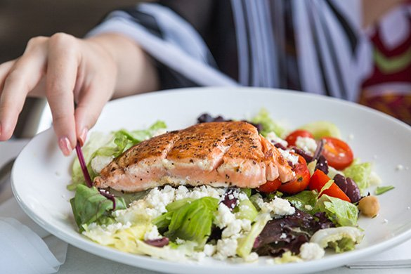

Back to front page
Salmon Cobb Salad

Description
Brush rendered bacon fat on salmon before grilling to keep the fish super moist and to add an extra dose of smoky flavor.
The Cobb is the ultimate composed salad, and salmon is the ultimate summer salad protein. The fun you can have experimenting
with different textures and flavors is practically endless. This summer salmon salad pairs grilled corn and red onions with Cobb
standbys like bacon, avocado, and hard-boiled eggs. Salmon Cobb Salad recipe creator Justin Chapple suggests looking for soil-grown
greens (not hydroponic) for the best flavor.
Ingredients
- 6 ounces thick-cut bacon (about 4 slices) cut into 1-in pieces
- 3 med-size ears fresh corn, husks removed
- 1 med-size red onion, cut into 1/4-in thick slices
- 1/4 cup + 1 tablespoon extra-virgin olive oil, divided
- 1 3/4 teaspoons kosher salt, divided, plus more to taste
- 1 teaspoon black pepper, divided, plus more to taste
- 1 (1 pound) skin-on center-cut salmon fillet
- 3 tablespoons champagn vinegar
- 2 tablespoons Dijon mustard
- 2 tablespoons finely chopped fresh tarragon
- 1 1/2 tablespoons honey
- 1 tablespoon water
- 1 large (about 12 ounces) head Bibb lettuce (not hydroponic), cored and torn (about 10 loosely packed cups)
- 4 hard-cooked eggs, peeled and halved
- 1 large (9 ounce) ripe avocado, sliced
- 1 cup cherry or grape tomatoes (about 6 pounds), halved
Directions
- Cook bacon in a skillet over medium, stirring occasionally, until just crispy, about 5 minutes. Transfer bacon to paper towels; reserve drippings in skillet.
- Preheat grill to medium-high (400°F to 450°F). Brush corn and onion evenly with 1 tablespoon oil; sprinkle evenly with 1/2 teaspoon salt and 1/4 teaspoon pepper. Arrange on oiled grates; grill, uncovered, flipping onion slices once and corn occasionally, until lightly charred, about 5 minutes per side for onion and 12 to 15 minutes total for corn. Transfer to a cutting board; let cool 5 minutes. Separate onion slices into rings. Cut corn kernels from cobs; discard cobs. Set onion rings and corn kernels aside until ready to use.
- Brush salmon on both sides with reserved bacon drippings; sprinkle with 1 teaspoon salt and 1/2 teaspoon pepper. Place salmon, skin side down, on oiled grill grates; grill until lightly charred, about 4 minutes. Flip salmon, and grill until char marks appear and salmon is cooked through, 3 to 4 minutes. Transfer to a plate; let stand until cool enough to handle, about 5 minutes. Remove and discard salmon skin, and break salmon into large chunks. Cover loosely with aluminum foil to keep warm; set aside.
- Whisk together vinegar, mustard, tarragon, honey, 1 tablespoon water, remaining 1/4 cup oil, remaining 1/4 teaspoon salt, and remaining 1/4 teaspoon pepper in a bowl. Toss together lettuce, watercress, and 1/2 cup dressing on a large platter; season with additional salt and pepper to taste. Arrange bacon, onion, corn, salmon, eggs, avocado, and tomatoes on greens. Serve with remaining dressing.